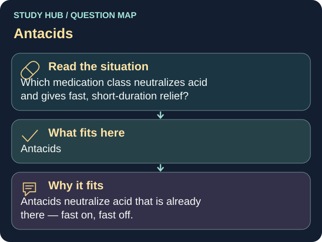

Which medication class neutralizes acid and gives fast, short-duration relief?
Answer
Antacids
Reasoning
Antacids neutralize acid that is already there — fast on, fast off.
Why the other answers do not fit
- H2 blockers
- Proton pump inhibitors
- Prokinetics
Shared reasoning for choices without a separate note: Antacids neutralize acid that is already there — fast on, fast off.



![Endometriosis: tissue outside the uterus. A female pelvic anatomy diagram labels normal endometrium inside the uterine cavity and endometriosis lesions on the outer uterine surface, an ovary, the pelvic lining and the fallopian tube, with an ovarian endometrioma labelled as a chocolate cyst and an adhesion. Symptoms listed: painful periods, chronic pelvic pain, deep pain with sex, bowel and bladder pain especially during periods, fatigue and possible fertility difficulty, and that some people have very few symptoms. Assessment: pain and menstrual history, pelvic examination and imaging such as ultrasound or MRI, normal imaging does not exclude endometriosis, and a clinical diagnosis can guide treatment while laparoscopy may be appropriate in selected cases. Treatment depends on symptoms and fertility goals: pain relief, hormonal suppression, surgery, with supportive symptom tracking and pelvic floor or pain care. Key distinctions: endometriosis occurs outside the uterus, adenomyosis occurs within the uterine muscle, pregnancy and hysterectomy are not guaranteed cures, and pain severity does not reliably match lesion extent. Educational illustration, sources ACOG and WHO](../../img/infographics/endometriosis.webp)